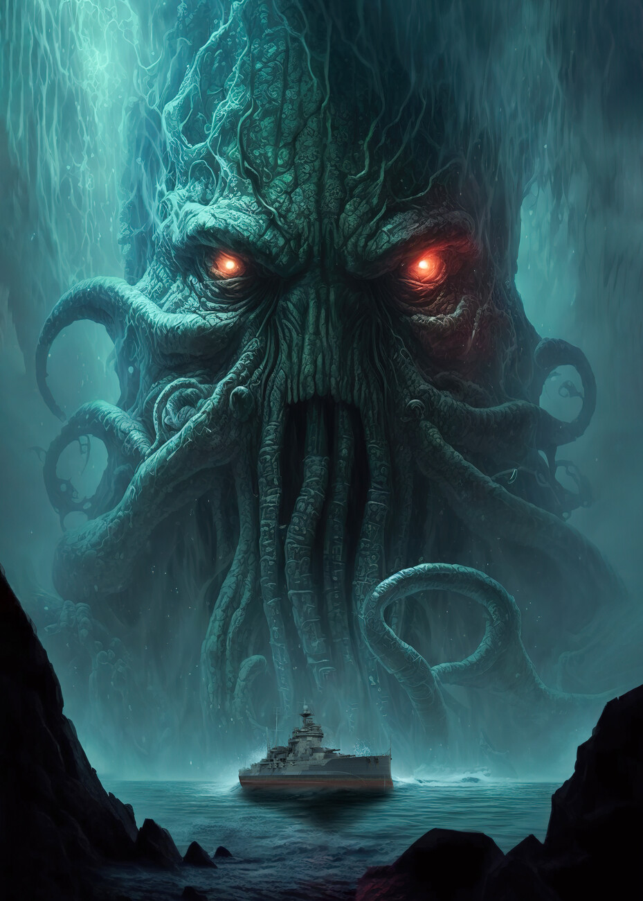
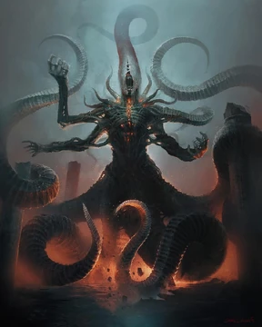

I.
Tomos & Obras Proibidas


Capítulo Primeiro
"Ph'nglui mglw'nafh Cthulhu R'lyeh wgah'nagl fhtagn."
— Liturgia do Culto de Cthulhu
Adentre os manuscritos proibidos de Howard Phillips Lovecraft — onde o cosmos revela sua verdadeira natureza: vasta, indiferente, e habitada por entidades que existem além de toda sanidade humana.
Abrir o Grimório
"A emoção mais antiga e mais forte da humanidade é o medo, e o tipo mais antigo e mais forte de medo é o medo do desconhecido."H.P. Lovecraft — Supernatural Horror in Literature, 1927
Grande Antigo · Oceânico · Adormecido
Jaz morto em sonho em sua cidade ciclópica de R'lyeh, submersa nas profundezas do Pacífico. Seus pensamentos oníricas perturbam as mentes sensíveis ao redor do globo, gerando cultos secretos e visões de geometrias impossíveis.
✦ Nota do Escriba: "Não se aproxime. Não leia os hieróglifos. Não sonhe."

Mensageiro dos Deuses · Informe · Onipresente
O único dos Grandes Antigos que age diretamente entre os mortais. Assume mil máscaras — faraó negro, homem de terno, vento que uiva — cada forma uma mentira diferente para o mesmo propósito incompreensível.
✦ Nota do Escriba: "Ele fala. Fuja antes de entender o que diz."

Scriptor · Visionário · Recluso de Providence
Howard Phillips Lovecraft nasceu em Providence, Rhode Island, numa família de origens ilustres mas fortuna declinante. Recluso e assombrado por sonhos que ele descreveria como "mais vívidos que a realidade", Lovecraft encontrou na escrita o único canal para as visões que o perturbavam desde a infância.
Sua maior contribuição à literatura foi o conceito de horror cósmico — a ideia perturbadora de que o universo é imensurável, indiferente à existência humana, e habitado por forças tão além de nossa compreensão que o simples contato com elas seria suficiente para destruir a sanidade.
Morreu em 1937, praticamente desconhecido e em grande pobreza. Hoje, é estudado em universidades e considerado um dos escritores mais influentes do século XX, tendo inspirado Stephen King, Guillermo del Toro e incontáveis outros criadores.